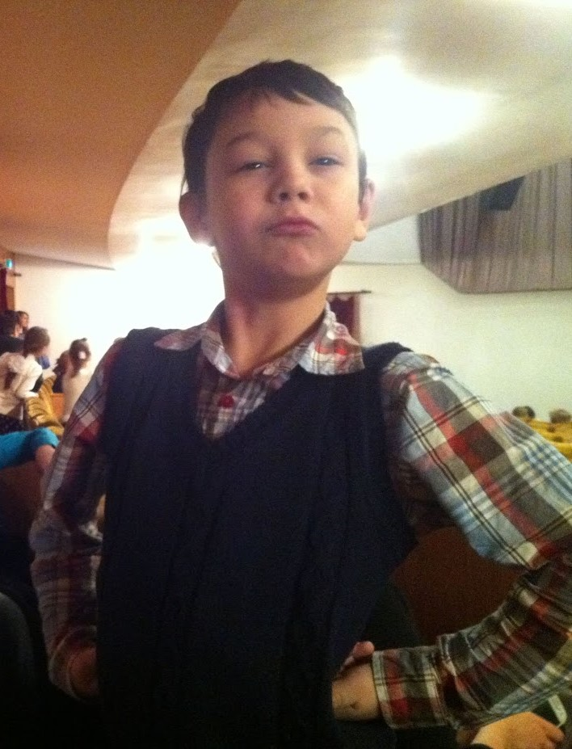

Настоящее имя Даниил Сергеевич Шишкин был рожден 1 Февраля 2005 года. Когда он родился впервые за зиму того года пошел снег что ознаменовал приход нового гения. С самого детства по развитию обгонял своих сверстников. С детства обладал тягой с современным технологиям в следствивии чего в 2.5 года научился пользоваться компьютером своей бабушки. В школе не проявлял своей гениальности потому что ему там было скучно однако именно там он и нашел своего будущего соратника и партнера по разуму с которым они еще сделают не мало вещей которые потрясут этот мир
Детство провел в загородной резиденции семьи Шишкиных, был окружен любовью и заботой. Любовь к компьютерным играм привил его отец играя с ним в Need for Speed Most Wanted. Также находилось время для первых гениальных изобретений которые упрощали жизнь
Школьные годы были сложным временем. В начальной школе ему повезло с первой учительницей она была очень мудрой женщиной которая была настоящим для гения наставником и именно она помогла сложить ему картину мировоззрения заложив фундаментальные вещи. Но даже тогда с другими учителями было не так просто. Кто то недолюбливал его за его особенности, кто-то в открытую его ненавидел однако время в начальной школе он сам считает беззаботным
Того же не мог наш гений сказать о средней школе. Постоянные стычки с преподавателями смена класса. Открытая травля со стороны верхушки школы. Однако именно в это время был найден соратник и партнер по разуму который стал его лучшим другом и названным братом. Они обладали одним уровнем интеллекта и стали вместе идти против натиска этого мира. Также эти года были годами множества открытий и многих новых вещей. Однако закончилось всё тем что на половине 9-го класса юный гений после очередного скандала ушел из школы и перевелся на домашнее обучение. Однако всё еще благодарит это время за многое.
На данный
момент юный гений достиг титула профессор в области жопных наук, так же
является доктором энергетических наук. О его достижениях нет смысла
говорить потому что каждый слышал о изобретениях компании
“The Coniferous Сorp” лучше просто признать факт что его работа изменила мир до не узнаваемости
Также не стоит опускать достижения в спорте юного гения, он является мастером спорта по фехтованию создав свой собственный стиль боя на двух мечах его прозвали “черный мечник”. Так же владеет многими видами искусств но разработал свой собственный стиль в этой области его мастерство оценить сложно .Как он сам говорит: “Да конечно безусловно абсолютно точно без преувеличений физическая развитость важна но самое главное это мозги качайте мозги ребята”
Также ADARVDAZ является медийной личностью в данный момент у него активно два канала общая аудитория которых превышает 100 миллионов человек
КаналЯвляется музыкальным исполнителем под именем ДаНиЧкА ТрАнСфОрМеР. Автор таких хитов как: "Херсосео", "Жопа", "Фарей Нерон", "Мир"
СлушатьПодобно всем великим людям нашему гению было не легко в плане дружбы и доверия. Его доверительный круг состоит только из людей который ничуть не хуже его а в чем то даже превосходят за немногими исключениями, поэтому давайте пройдемся по личностям которые важны для ADARVDAZ
Мы уже уже не
раз не упоминали о друге и названом брате которого наш Даниил нашел в
средней школе так вот это он. Обладает таким же интеллектом как и наш
гений и вместе они смогли достичь многих достижений в жопных науках.
Также участвовал в медийной деятельности и написал свои строки в треке
“Жопа”. В данный момент является Генеральным Директором
компании “The Coniferous Сorp” и участвует во множестве разработках
и научных проектах.
Как говорит сам ADARVDAZ о нем:
“Дима очень важный человек в моей жизни не
сомневаюсь что без него я бы не достиг и половины от того что имею,
благодарю бога за нашу встречу ”
Сам Дмитрий про ADARVDAZ:
“Могу поведать что человек хоть и хороший но плохой совершенно нормальный псих”
Та кого Даниил
назвал своей сестрой. В темные времена она помогала вставать и идти
дальше нашему юному герою за что он ей благодарен и по сей день.
Помогает взглянуть на мир другим взглядом. На данный момент состоит в
совете директоров “The Coniferous Сorp” и посещает почти все заседания
совета директоров. Официально отвечает за финансы неофициально следить
за тем чтобы всё было красиво, модно, молодежнно и классно. Все
дизайнерские решения в офисах компании её рук дело. Также по слухам
логотип компании тоже она создала.
ADARVDAZ о Татьяне:
“Таня
стала для меня лучом солнца в непроглядной тьме и в целом львиная доля
успеха компании это ее заслуга, она сделал ее красивой и
привлекательной”
Татьяне о ADARVDAZ :
“Супер чел”
С этим
человеком познакомился позже всех. Обладает незаурядным умом и прежде
всего отличными медийными навыками на этой почве и начали общаться с
Даниилом. Крайне криминальный человек о его преступлениях жители
Красноярска слагают легенды однако каждый раз выходил сухим из воды. На
данный момент основал свою компанию “Red Glass Club” которая ведет
тесное сотрудничество с компанией “The Coniferous Сorp”
ADARVDAZ о Володие:
“Его не зовут он сам приходит, абсолютно неуловим никто не понимает чем он занимается ясно лишь то насколько он
могуществен”
Володий о ADARVDAZ:
“Я могу сказать, что это личность очень не однозначная”
И последний и
по значимости и по списку Максимилиан ПОПОв. Состоит в совете директоров
“The Coniferous Сorp” но не разу на совете директоров не появлялся.
Занимается медийной составляющей и проектами связанными с медиа. Он
оказывал большую поддержку Даниилу в период его личностных кризисов за
что и заслужил его доверие.
ADARVDAZ о Максимилиане:
“Может он и не гений может и такой как и мы но он хороший парень который помог мне в свое время и явно обладает потенциалом”
К сожалению Максимилиан не дожил до этих дней поэтому он уже ничего сказать не может
ADARVDAZ о том что его больше нет:
“Честно
до сих пор не ясно умер он или хайпиться на своей смерти но в любом
случае Максим был странным человеком со своими тараканами, не смотря не
на что он такой какой он есть жил со своими убеждениями и умер с ними,
пускай он покоится с миром Падший брат”
This site was created with the Nicepage